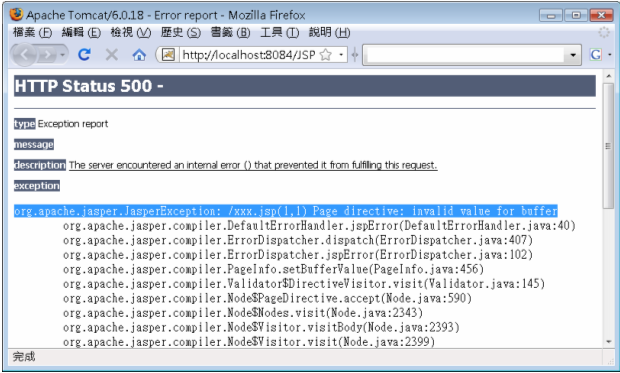
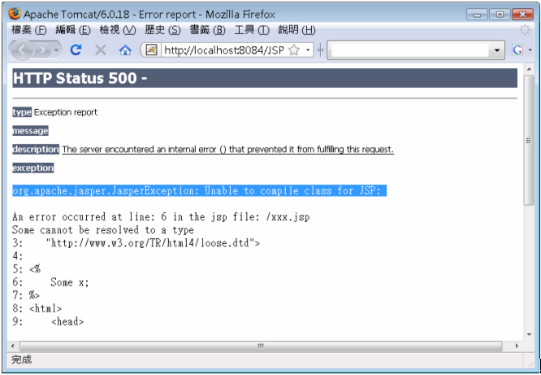
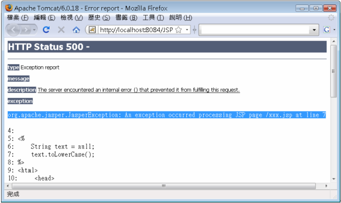

|
|
JSP終究會轉譯為Servlet，所以錯誤可能發生在三個時候：
如果在JSP頁面中撰寫了一些錯誤語法，而使得容器在轉譯JSP時不知道該怎麼將那些語法轉譯為Servlet的.java檔案，就會發生錯誤。例如，在page指令元素中指定了錯誤的選項，像是buffer屬性指定錯誤：
<%@page contentType="text/html" buffer="16"%>
實際上指定buffer屬性時必須指定單位，例如"16kb"。如果你直接將這個JSP檔案放到容器上，在請求JSP時容器無法轉譯，在Tomcat下就會出現類似以下的畫面錯誤：

容器通常會提示無法轉譯的原因，確定是否為這類錯誤的一個原則，就是查看上圖中反白區段，通常會是告知語法不合法的訊息。
如果你使用整合開發工具（IDE），有檢查JSP語法的功能的話，在編輯器上就可以直接看到錯誤語法的提示。若初學者在沒有JSP語法檢查功能的編輯器上撰寫JSP，就很容易遇到這種錯誤。
如果你的JSP語法沒有問題，則容器可以將JSP轉譯為
Servlet的.java程式，接著就會嘗試將.java編譯為.class檔案，如果此時編譯器因為某個原因而無法完成編譯，則會出現編譯錯誤。例
如，你的JSP中使用了某些類別，但部署至伺服器時，忘了將相關的類別也部署上去，使得初次請求JSP時，雖然轉譯可以完成，但編譯時就會出錯，此時（在
Tomcat下）就會出現類似以下的畫面錯誤：

這個錯誤訊息比較容易確認，例如使用Tomcat容器的話，若出現"Unable to compile"之類的訊息，通常就是在編譯階段發生了錯誤。
如果你使用整合開發工具（IDE），有檢查JSP語法的功能的話，在編輯器上可能會看到編譯方面的錯誤提示。但有時會像這邊舉的例子，開發階段與部署階段的運行環境不同，而使得找不到類別的情況發生時，使得部署後請求JSP時出現這類的錯誤。
如果Servlet進行編譯成功，接下來就可以載入容器開始執行，但仍有可能在執行時期因找不到某個資源、程式邏輯上的問題而發生錯誤。例如最常見的NullPointerException就是一個例子。

執行時期的錯誤訊息也比較容易確認，例如使用Tomcat容器的話，若出現"An exception occurred processing JSP page"之類的訊息，通常就是執行時期發生了錯誤。
這類錯誤由於是執行時期錯誤，整合開發工具檢查不出來。雖然容易確認是執行時期錯誤，但執行時期的錯誤可能原因就非常多了，此時你對例外繼承架構與處理方式是否了解，以及如何善用例外的堆疊追蹤（Stacktrace）來找出原因，就非常重要了。 你可以自訂執行時期例外發生時的處理頁面，只要使用page指示元素時，設定errorPage屬性來指定錯誤處理的JSP頁面。例如：
<%@page contentType="text/html" 這是一個簡單的加法網頁，從請求參數中取得a與b的值後進行相加。如果有錯誤時，你想要直接轉發至error.jsp顯示錯誤，則該JSP頁面isErrorPage屬性設定為true即可。例如：
<%@page contentType="text/html" pageEncoding="UTF-8" exception物件是JSP的隱含物件，由add.jsp丟出的例外物件訊息就包括在exception之中，而且只有isErrorPage設定為true的頁面才可以使用exception隱含物件。在這個error.jsp中的標題上，只是簡單地顯示exception 呼叫toString()之後的訊息，也就是<%=exception%>顯示的內容；另外也可將例外堆疊追蹤顯示出來。 printStackTrace()接受一個PrintWriter物件作為參數，所以你使用out隱含物件建構PrintWriter物件，然後再使用 exception的printStackTrace()方法來顯示例外堆疊追蹤。 如果在存取應用程式的時候發生了例外或錯誤，而你沒有在Servlet/JSP中處理這個例外或錯誤，則最後會由容器加以處理，一般容器就是直接顯示例外訊息與堆疊追蹤訊息。如果希望容器發現這類例外或錯誤時，可以自動轉發至某個URL，則可以在web.xml中使用<error-page>進行設定。 例如，若想要在容器收到某個類型的例外物件時進行轉發，則可以在<error-page>中使用<exception-type>指定： <web-app …>
<error-page> <exception-type>java.lang.NullPointerException</exception-type> <location>/report.view</location> </error-page> </web-app> 如果你要在<location>中設定的是JSP頁面，則該頁面必須設定isErrorPage屬性為true，才可以使用exception隱含物件。 如果想要基於HTTP錯誤狀態碼轉發至處理頁面，則是搭配<error-code>來設定。例如在找不到檔案而發出404狀態碼時，希望都交由某個頁面處理： <web-app …>
<error-page> <error-code>404</error-code> <location>/404.jsp</location> </error-page> </web-app> 這個設定，在自行使用HttpServletResponse的sendError()送出錯誤狀態碼時也有作用，因為sendError()只是告知容器，以容器的預設方式或web.xml中的設定來產生錯誤狀態碼的訊息。 |